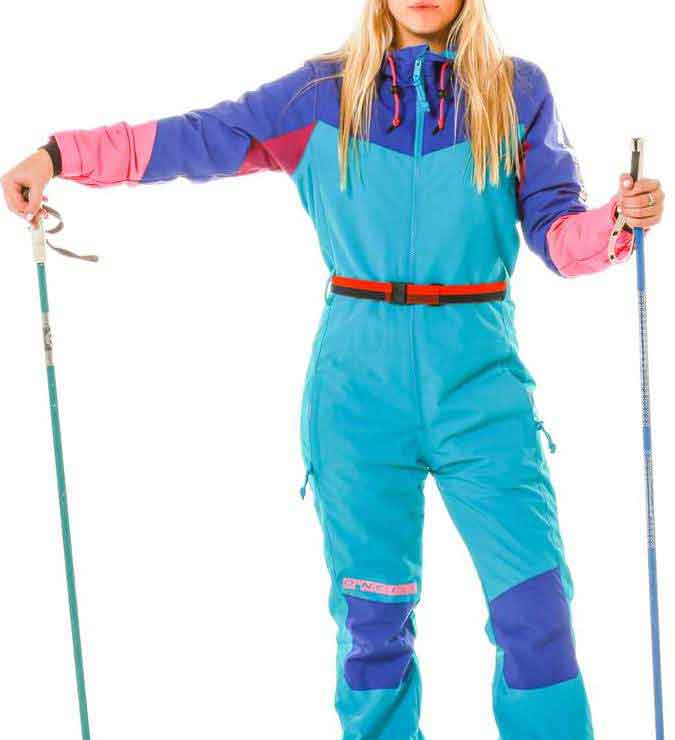
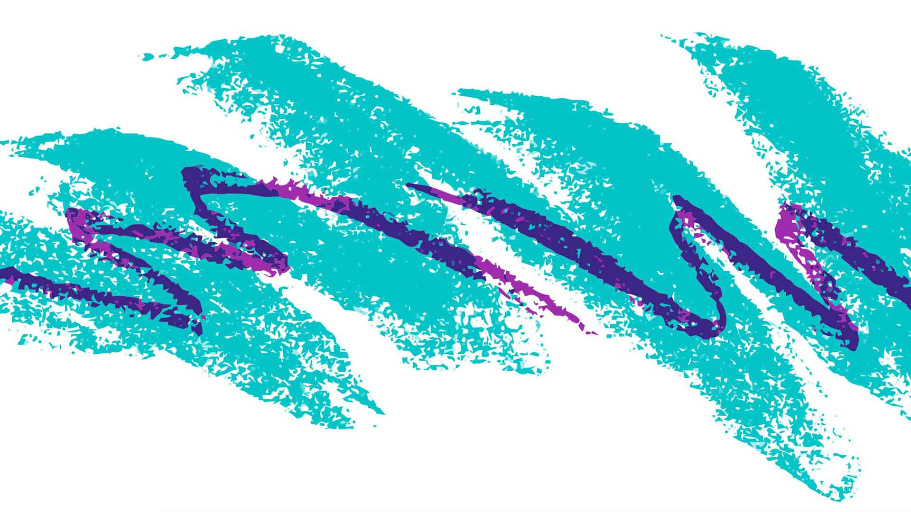

COLOR
This is my page dedicated to color trends of the 80's and early 90's and it may be as tacky and ugly as the assignment had prompted.
I got inspiration for this color palette from "80's in Aspen" ski suits and 90's bomber jackets.

Adding the CSS stylesheet made styling a lot more efficient. Even if this looks horrendous.
